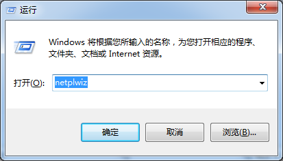
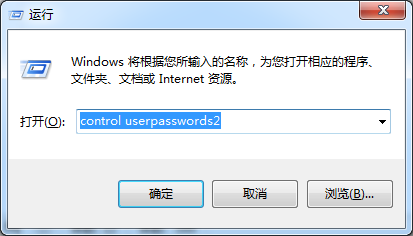
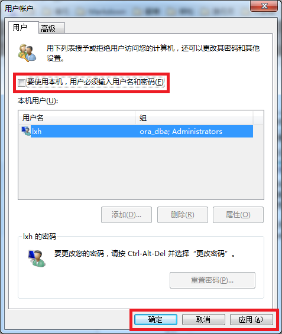
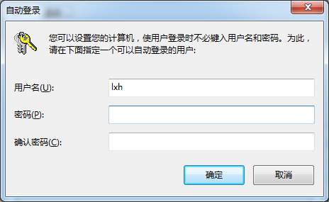
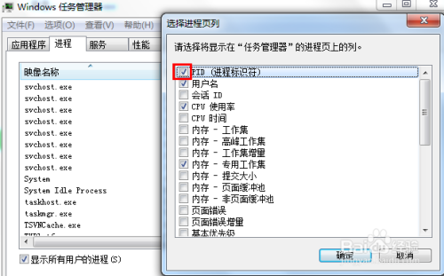

@(工作笔记)
windows-record
[TOC]
Windows Server 2003 R2 标准版/企业版永久激活序列号密钥
https://www.nocang.com/windows-server-2003-r2/
Notepad++怎么关联文本
https://jingyan.baidu.com/article/215817f78270dc1edb142372.html
Notepad++怎么关联文本，Notepad++是一款非常不错的文本编辑器，我们如何把它关联到记事本或者文本工具呢，大家编程的时候会用这个软件，那我们怎么怎么关联呢
下载微软的3.0驱动
重新插拔移动硬盘就能识别了 并自动下载驱动
Windows 7 开机无需密码自动登录设置
https://blog.csdn.net/liuxinghao/article/details/41675377
对于自己的电脑，每次开机启动需要输入密码着实麻烦，但是取消密码又太不安全（有的时候锁屏离开一会）。所以就想找一种方法既能保持密码，又能在锁屏时需要密码解锁。
- 打开程序-运行（从开始菜单中找，或者直接组合键win+r），键入netplwiz或control userpasswords2，打开用户账号管理页面；  
- 在用户账号管理页面中，取消勾选“要使用本机，用户必须输入用户名和密码”，然后点击“确定”或“应用”，弹出自动登录管理页面； 
- 在自动登录管理页面中，输入正确的密码，点击确定。 
- 再次启动电脑时，就能够看到效果了。
windows 端口占用查询
https://jingyan.baidu.com/article/3c48dd34491d47e10be358b8.html
